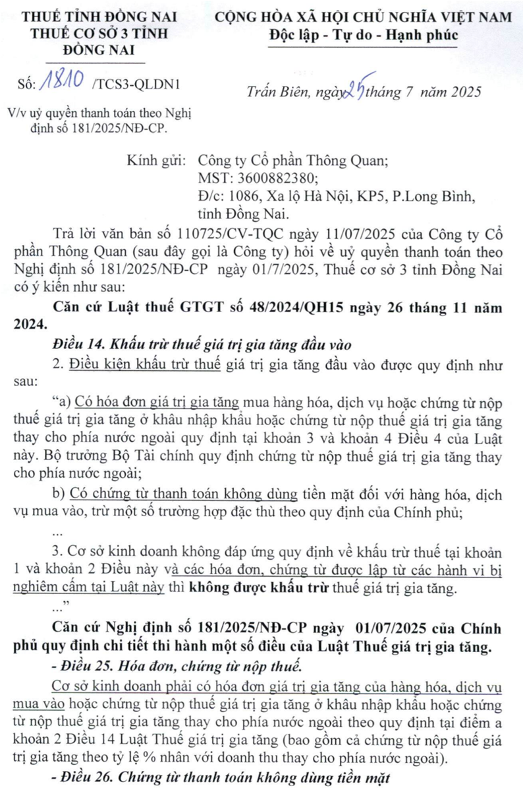
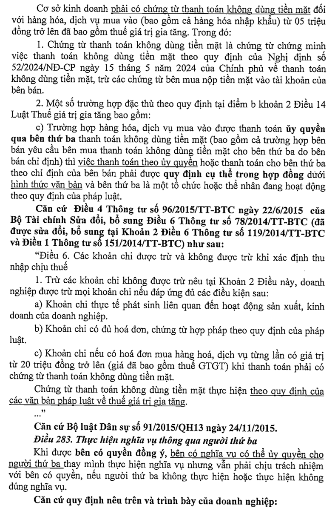
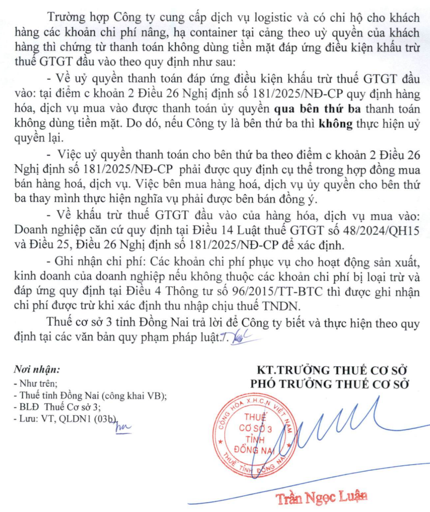

Ủy quyền cho cá nhân, nhân viên thanh toán tiền mua hàng hóa dịch vụ là một trong những hình thức thanh toán được luật thuế chấp nhận để khấu trừ thuế GTGT đầu vào và được tính vào làm chi phí được trừ khi tính thuế TNDN
Cụ thể các quy định liên quan đến việc ủy quyền cho cá nhân, nhân viên thanh toán tiền mua hàng hóa dịch vụ như sau:
1. Về thuế giá trị gia tăng:
Theo quy định tại khoản 3 điều 24 của Nghị định 181/2025/NĐ-CP hướng dẫn Luật Thuế giá trị gia tăng có hiệu lực từ ngày 01/7/2025 thì:
Điều 24. Khấu trừ thuế giá trị gia tăng đối với một số trường hợp đặc thù
3. Đối với hàng hóa, dịch vụ mua vào dưới hình thức ủy quyền, cơ sở kinh doanh được khấu trừ thuế giá trị gia tăng của hàng hóa, dịch vụ mua vào dưới hình thức ủy quyền cho tổ chức, cá nhân khác mà hóa đơn mang tên tổ chức, cá nhân được ủy quyền bao gồm các trường hợp sau đây:
a) Doanh nghiệp bảo hiểm ủy quyền cho người tham gia bảo hiểm sửa chữa tài sản; chi phí sửa chữa tài sản cùng các vật tư, phụ tùng thay thế có hóa đơn giá trị gia tăng ghi tên người tham gia bảo hiểm, doanh nghiệp bảo hiểm thực hiện thanh toán cho người tham gia bảo hiểm phí bảo hiểm tương ứng theo hợp đồng bảo hiểm thì doanh nghiệp bảo hiểm được khấu trừ thuế giá trị gia tăng tương ứng với phần bồi thường bảo hiểm thanh toán theo hóa đơn giá trị gia tăng đứng tên người tham gia bảo hiểm; trường hợp phần bồi thường bảo hiểm do doanh nghiệp bảo hiểm thanh toán cho người tham gia bảo hiểm có giá trị từ 05 triệu đồng trở lên thì phải thực hiện thanh toán không dùng tiền mặt.
b) Trước khi thành lập doanh nghiệp, các sáng lập viên có văn bản ủy quyền cho tổ chức, cá nhân thực hiện chi hộ một số khoản chi mua sắm hàng hóa, vật tư và chi phí khác liên quan đến việc thành lập doanh nghiệp thì doanh nghiệp được khấu trừ thuế giá trị gia tăng đầu vào theo hóa đơn giá trị gia tăng đứng tên tổ chức, cá nhân được ủy quyền và phải thực hiện thanh toán không dùng tiền mặt cho tổ chức, cá nhân được ủy quyền đối với những hóa đơn có giá trị từ 05 triệu đồng trở lên.
Vậy là: Tại thời điểm trước khi thành lập doanh nghiệp (khi chưa có tên công ty, địa chỉ, chưa có MST) mà doanh nghiệp có phát sinh các khoản chi như mua sắm hàng hóa, vật tư và chi phí khác liên quan đến việc thành lập doanh nghiệp như đào tạo nhân viên, quảng cáo... thì có thể ủy quyền cho cá nhân thực hiện chi hộ các khoản chi phát sinh trước khi thành lập doanh nghiệp này => Sau khi thành lập doanh nghiệp xong, thì DN được kê khai khấu trừ thuế GTGT đầu vào đối với các khoản chi này nếu có đầy đủ hồ sơ chứng từ sau đây:
+ Giấy ủy quyền (các sáng lập viên lập văn bản ủy quyền cho cá nhân thực hiện chi hộ)
+ Hóa đơn giá trị gia tăng đứng tên của cá nhân được ủy quyền (Tại thời điểm phát sinh hóa đơn (phát sinh chi phí) do DN chưa thành lập nên chưa ghi được tên, địa chỉ, MST của công ty lên hóa đơn => Do đó, trên hóa đơn thông tin người mua hàng sẽ ghi theo tên của cá nhân được ủy quyền)
+ Chứng từ thanh toán đúng quy định: Sau khi DN được thành lập thì phải thanh toán lại khoản tiền mà cá nhân đã chi hộ trước đó
+/ Những hóa đơn có giá trị từ 05 triệu đồng trở lên thì DN phải thực hiện thanh toán không dùng tiền mặt cho cá nhân
+ Còn những hóa đơn có giá trị dưới 05 triệu đồng thì DN thanh toán cho cá nhân đã chi hộ bằng tiền mặt hoặc không dùng tiền mặt đều được
Theo quy định tại khoản 2, điều 26 của Nghị định 181/2025/NĐ-CP thì:
Điều 26. Chứng từ thanh toán không dùng tiền mặt
Cơ sở kinh doanh phải có chứng từ thanh toán không dùng tiền mặt đối với hàng hóa, dịch vụ mua vào (bao gồm cả hàng hóa nhập khẩu) từ 05 triệu đồng trở lên đã bao gồm thuế giá trị gia tăng. Trong đó:
2. Một số trường hợp đặc thù theo quy định tại điểm b khoản 2 Điều 14 Luật Thuế giá trị gia tăng bao gồm:
c) Trường hợp hàng hóa, dịch vụ mua vào được thanh toán ủy quyền qua bên thứ ba thanh toán không dùng tiền mặt (bao gồm cả trường hợp bên bán yêu cầu bên mua thanh toán không dùng tiền mặt cho bên thứ ba do bên bán chỉ định) thì việc thanh toán theo ủy quyền hoặc thanh toán cho bên thứ ba theo chỉ định của bên bán phải được quy định cụ thể trong hợp đồng dưới hình thức văn bản và bên thứ ba là một tổ chức hoặc thể nhân đang hoạt động theo quy định của pháp luật.
i) Trường hợp hàng hóa, dịch vụ mua vào phục vụ cho hoạt động sản xuất, kinh doanh hàng hóa, dịch vụ chịu thuế giá trị gia tăng được ủy quyền cho cá nhân là người lao động của cơ sở kinh doanh thanh toán không dùng tiền mặt theo quy chế tài chính hoặc quy chế nội bộ của cơ sở kinh doanh, sau đó cơ sở kinh doanh thanh toán lại cho người lao động bằng hình thức thanh toán không dùng tiền mặt thì được khấu trừ thuế giá trị gia tăng đầu vào.
Vậy là: Trong quá trình hoạt động sản xuất kinh doanh của doanh nghiệp mà phát sinh trường hợp doanh nghiệp ủy quyền cho cá nhân là người lao động thanh toán tiền mua hàng hóa dịch vụ để phục vụ cho hoạt động sản xuất, kinh doanh hàng hóa, dịch vụ chịu thuế GTGT thì được khấu trừ thuế giá trị gia tăng đầu vào nếu có đầy đủ hồ sơ chứng từ sau đây:
+ Giấy ủy quyền (Doanh nghiệp ủy quyền cho cá nhân người lao động thực hiện thanh toán không dùng tiền mặt)
+ Quy chế tài chính hoặc quy chế nội bộ của doanh nghiệp có quy định về việc ủy quyền cho cá nhân là người lao động thanh toán không dùng tiền mặt
+ Hóa đơn GTGT mua hàng hóa dịch vụ để phục vụ cho hoạt động sản xuất, kinh doanh hàng hóa, dịch vụ chịu thuế giá trị gia tăng (Hóa đơn này phải mang tên, địa chỉ, mã số thuế của doanh nghiệp)
+ Chứng từ chứng minh cá nhân là người lao động đã thực hiện thanh toán không dùng tiền mặt cho nhà cung cấp (Chứng từ chuyển tiền từ tài khoản của cá nhân sang tài khoản của người bán như Sao kê tài khoản ngân hàng của cá nhân; Giấy báo có/Ủy nhiệm chi; Ảnh chụp giao dịch trên ứng dụng ngân hàng điện tử (Internet Banking/Mobile Banking).)
+ Chứng từ chứng minh việc Doanh nghiệp đã thanh toán lại cho người lao động bằng hình thức thanh toán không dùng tiền mặt (Chứng từ thanh toán qua ngân hàng từ tài khoản công ty sang tài khoản cá nhân như Sao kê tài khoản ngân hàng của công ty; Ủy nhiệm chi của công ty)
Lưu ý: Đối với các Hóa đơn mua hàng hóa dịch vụ có tổng thanh toán từ 5 triệu đồng trở lên mới cần phải có chứng từ thanh toán không dùng tiền mặt (ở cả 2 bước: cá nhân NLĐ thanh toán cho bên bán và DN thanh toán lại tiền cho cá nhân NLĐ)
Còn đối với những hóa đơn mua hàng hóa dịch vụ có giá trị dưới 05 triệu đồng thì không bắt buộc phải thực hiện thanh toán không dùng tiền mặt => Đó đó, nếu DN có ủy quyền cho cá nhân NLĐ thanh toán các hóa đơn có tổng thanh toán dưới 5 triệu đồng thì việc thanh toán bằng hình thức tiền mặt hay chuyển khoản cũng đều được khấu trừ thuế GTGT đầu vào
2. Về thuế thu nhập doanh nghiệp
Điều 9. Các khoản chi được trừ khi xác định thu nhập chịu thuế
1. Trừ các khoản chi không được trừ quy định tại Điều 10 của Nghị định này, doanh nghiệp được trừ các khoản chi khi xác định thu nhập chịu thuế nếu đáp ứng đủ điều kiện tại các điểm a, b và c sau đây:
c) Khoản chi có chứng từ thanh toán không dùng tiền mặt đối với trường hợp mua hàng hóa, dịch vụ và các khoản thanh toán khác từng lần có giá trị từ 05 triệu đồng trở lên. Chứng từ thanh toán không dùng tiền mặt thực hiện theo quy định của các văn bản pháp luật về thuế giá trị gia tăng.
c1) Trường hợp mua hàng hóa, dịch vụ của một người bán có giá trị dưới 05 triệu đồng nhưng mua nhiều lần trong cùng một ngày có tổng giá trị từ 05 triệu đồng trở lên thì chỉ được tính vào chi phí được trừ trong trường hợp có chứng từ thanh toán không dùng tiền mặt;
c2) Trường hợp doanh nghiệp phát sinh các khoản chi do doanh nghiệp ủy quyền/giao cho người lao động trực tiếp mua hộ hàng hóa, dịch vụ để phục vụ hoạt động sản xuất kinh doanh của doanh nghiệp từ 05 triệu đồng trở lên mà các khoản chi phí này được thanh toán bởi người lao động bằng dịch vụ thanh toán không dùng tiền mặt thì tính vào chi phí được trừ nếu đáp ứng đủ các điều kiện sau: Có hóa đơn, chứng từ theo quy định của pháp luật về kế toán, hóa đơn, chứng từ và quy chế tài chính hoặc quy chế nội bộ hoặc quyết định của doanh nghiệp quy định việc ủy quyền hoặc cho phép người lao động được phép thanh toán khoản mua hàng hóa, dịch vụ để phục vụ hoạt động sản xuất kinh doanh của doanh nghiệp và khoản chi này sau đó được doanh nghiệp thanh toán lại cho người lao động;
3. Mẫu giấy ủy quyền cho cá nhân, nhân viên thanh toán thanh toán tiền mua hàng hóa dịch vụ
|
CỘNG HÒA XÃ HỘI CHỦ NGHĨA VIỆT NAM
Độc lập - Tự do - Hạnh phúc
GIẤY ỦY QUYỀN THANH TOÁN
Căn cứ Quy chế Ủy quyền thanh toán cho cá nhân trong doanh nghiệp được ban hành kèm theo Quyết định số ……/2026/QĐ- ngày tháng năm 2026 của Tổng Giám đốc …………………;
Hôm nay, ngày … tháng … năm 2026, tại ………………., chúng tôi gồm:
BÊN ỦY QUYỀN (BÊN A):
Tên công ty: ………………
Địa chỉ: ……………………
Mã số thuế: …………….
Đại diện: ………………
Chức vụ: ……………………
BÊN ĐƯỢC ỦY QUYỀN (BÊN B):
Họ và tên: …………………………………………
Chức vụ/Bộ phận: ………………………………
Số CCCD: ………………………………
Ngày cấp: …………………………………………
Nơi cấp: …………………………………………
Số điện thoại: …………………………………
Sau khi thỏa thuận, hai bên tiến hành đồng ý xác lập giấy ủy quyền nhận tiền với các nội dung và điều khoản cụ thể như sau:
ĐIỀU 1: NỘI DUNG ỦY QUYỀN
- Bên A ủy quyền cho Bên B thay mặt Công ty thực hiện việc thanh toán mua hàng hóa, dịch vụ phục vụ hoạt động sản xuất, kinh doanh của Công ty Cổ Phần xxx với các nội dung cụ thể sau:
+ Thanh toán trực tiếp bằng chuyển khoản cho nhà cung cấp theo hóa đơn, chứng từ hợp lệ;
+ Nhận hóa đơn, chứng từ liên quan đến việc mua hàng hóa, dịch vụ;
+ Hoàn thiện hồ sơ thanh toán và nộp lại đầy đủ cho Phòng Tài chính - Kế toán Công ty
Công ty sẽ thực hiện thanh toán lại cho Bên B bằng hình thức chuyển khoản hoặc các hình thức thanh toán không dùng tiền mặt khác theo đúng quy định.
ĐIỀU 2: THỜI HẠN ỦY QUYỀN
Giấy ủy quyền này có hiệu lực từ ngày … tháng … năm 2026 đến hết ngày … tháng … năm 2026 hoặc cho đến khi có văn bản thay thế hoặc hủy bỏ.
ĐIỀU 3: CAM KẾT CỦA CÁC BÊN
Hai bên cam kết thực hiện đúng các nội dung nêu trên. Mọi hành vi vi phạm sẽ hoàn toàn chịu trách nhiệm trước pháp luật và nội quy, quy chế của Công ty.
Giấy ủy quyền được lập thành 02 bản, mỗi bên giữ 01 bản có giá trị pháp lý như nhau.
|
BÊN ỦY QUYỀN
(Ký và ghi rõ họ, tên)
|
BÊN ĐƯỢC ỦY QUYỀN
(Ký và ghi rõ họ, tên)
|
|
Công ty đào tạo Kế Toán Diệu Tâm mời các bạn tham khảo thêm Công văn 1810/TCS3-QLDN1 năm 2025 hướng dẫn đối với ủy quyền thanh toán không dùng tiền mặt cho bên thứ ba


